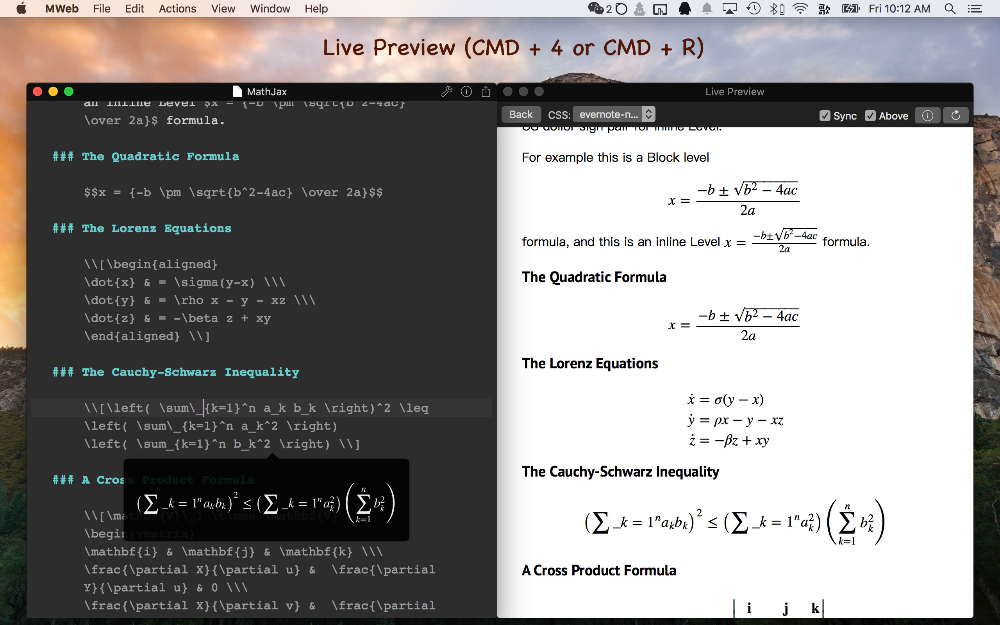

MWeb 2.0.7 submited!
MWeb 2.0.7 Update:
- Add Paste Markdown from HTML, Menu: Edit - Paste Markdown from HTML.
- Add CMD + O support open all text document, not only .md file.
- Add reload the Library, Menu: File - Reload the Library.
- When in Preview only Mode, CMD + P will print the preview result.
- Fix CMD + Shift + S duplicate document bug.
- Fix LaTeX bug in Table Edit/Insert.
- Other bug fixes and performance improvements
Paste Markdown from HTML demo:

MWeb 2.0 release! 50% OFF, only $7.99!
- Add custom Documents Library location. Preferences - General - Library Location
- Add Tabs support.
- Add tags support for Documents Library
- Add Toolbar, for hide Toolbar, please use menu: View - Hide Toolbar.
- Redesign Document Outline, shortcuts: CMD + 7
- Add table edit and insert UI, chortcuts: Ctrl + Shift + T.
- Bug fixes and performance improvements
There is a lot of new feature in MWeb 2.0! Please check out this video: https://www.youtube.com/watch?v=HLfj82JqvXs.
For 1.x Users
2.0 will update static blog theme, if you has changed the system blog theme, you can find your old theme in below location:
~/Library/Containers/com.coderforart.MWeb/Data/Documents/MWeb/LocalData/SiteThemes2.0 will update 1.x Library to 2.x, you can find the old Library in below location:
~/Library/Containers/com.coderforart.MWeb/Data/Documents/MWeb/LocalData/
MWeb 1.9.7 release! CMD + 4 and Live Preview improved, Publish to wordpress.com support latex.
CMD + 4 and Live Preview improved

When the Resize window when hide pane is disable, CMD + 4 will like below:
MWeb 1.9.1 release! New icon, Editor & Export to PDF improved, Add Local Images Upload Services.

MWeb 1.8 release! LaTex syntax highlight and LaTex live preview in Editor, Bug fix...

- Add save the document scroll position when next open (Pro Only).
- Add LaTex syntax highlight and LaTex live preview in Editor (Pro Only)!
- Live preview window add Above options, if it's enable, the live preview window will always above the Editor.
- Supported EL Capitan Split View.
- Full screen mode supported CMD + 1 or CMD + 3 to change the View Mode when
Resize window when hide paneis enabled. - Fix Library's categories drag & drop and sort.
- Fix document's list drag & drop sort crash.
- Fix CPU 100% in some documents.
- Fix CMD + F the findbar opened, can't to use CMD + Option + F swtch to find & replace bar.
- Fix export to PDF crash.